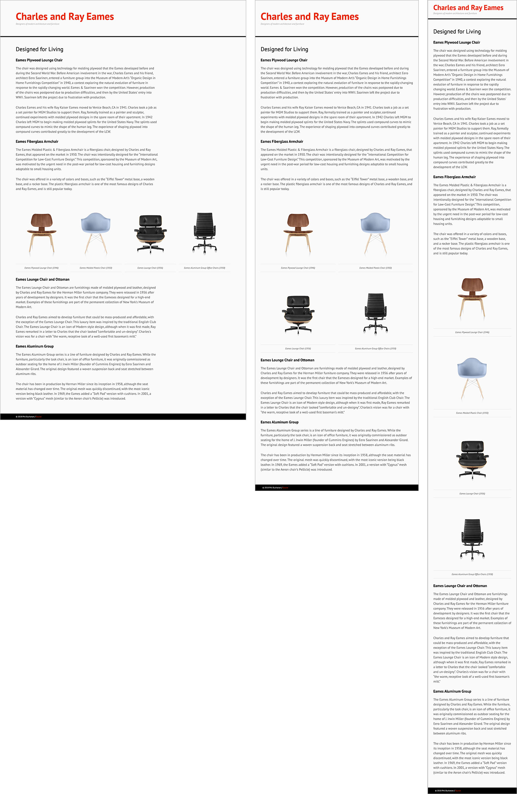

In-Class Exercises
Between weeks 3 and 5 of this course, your instructor will deliver comprehensive, hands-on, in-class tutorials on responsive HTML/CSS and Flexbox Grid. For each in-class exercise (ICE), you are given a starting document(s) and a screenshot(s) of the final outcome. By the end of each class, you should modify the starting document to recreate the final HTML and CSS documents – as close as possible to the provided screenshot. All of your code should be validated with the HTML Validator and CSS Validator before submission.
In-Class Exercise 1
Media Queries (3%)
Due week 3: September 19 (at the end of class)
Recreate the following screenshot using HTML and CSS. Do not forget to validate your HTML and validate your CSS.
Downloads:
- Starter document (zip) (Right-click and Download Linked File As...)
In-Class Exercise 2
Flexbox Grid Intro (4%)
Due week 4: September 26 (at the end of class)
Recreate the following screenshot using Flexbox Grid, HTML and CSS. Do not forget to validate your HTML and validate your CSS.

Downloads:
- Starter document (zip) (Right-click and Download Linked File As...)
- High-Resolution Image (Right-click and Download Linked File As...)
{kind=link}